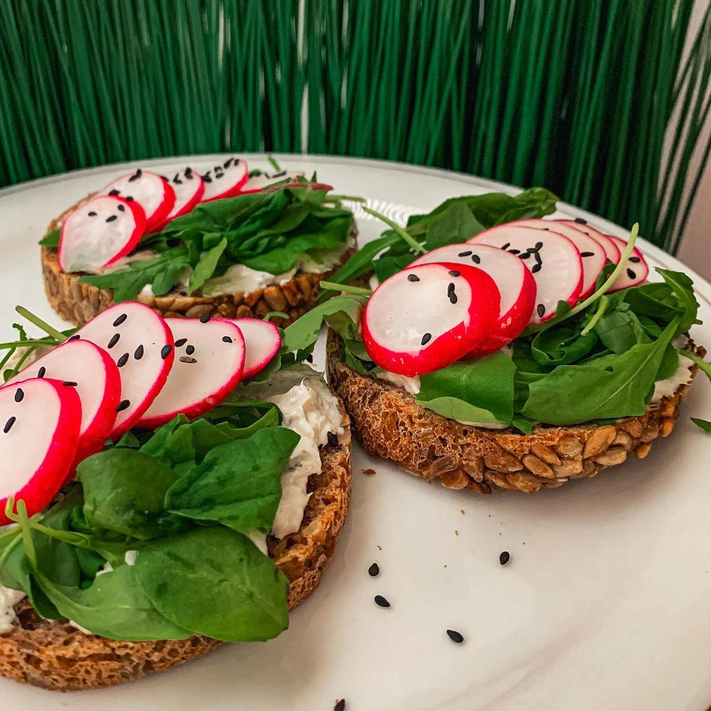

Mäsová pomazánka — Normy Jedál
Zbylo mi trošku pečeného vepřového masa na tymiánu, tak jsem udělala takovou vzpomínkovou pomazánku na letní dětský tábor...
...POMAZÁNKA Z PEČENÉHO MASA😍
~
Maso kotleta/bůček/krkovice upečete v troubě společně s cibulí, česnekem, kmínem a tymiánem 👉 pokud chcete mít pomazánku hodně jemnou, tak rozmixujte v blenderu a pokud hrubší, tak stačí pomlýt na mlýnku na maso👉 poté vmíchám plátek másla, kostku lučiny, 1 lžičku dijonské horčice, 1/2 najemno nakrájené cibule a pár nastrouhaných kyselých okurků👉 dosolit, dopepřit👉DOBROU CHUŤ😉
~
Máte rádi masovou pomazánku? Dělají ji někdy?
~
Viva masovka
Vaše Alisha 💋🍽
.
.
.
#alishaeasycooking
#salishouvkuchyni
#dnesjem #dnesjim #dnesvarim #dnespecu #dnespiju #nutrition #zdravejidlo #zdravejedlo #fitfood #fitrecepty #domaci #homefood #recepty #vareni #foodblogerka #foodblog #foodblogger #pomazanka #spread #masovapomazanka #veprove #pig @steinhausertisnov #koreni @kotanyi_cz #lucina @moje_lucina #maslo @tatramleko #fitchleba @penam_cz @penamfitden #blender @kitchenaidcz_sk